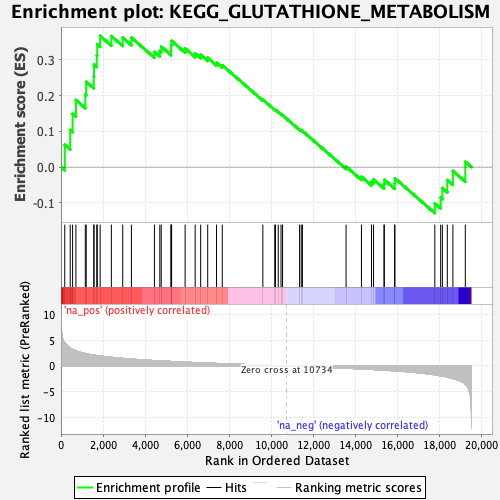

| | | Dataset | PFS |
| Phenotype | NoPhenotypeAvailable |
| Upregulated in class | na_pos |
| GeneSet | KEGG_GLUTATHIONE_METABOLISM |
| Enrichment Score (ES) | 0.3669315 |
| Normalized Enrichment Score (NES) | 1.2568109 |
| Nominal p-value | 0.1426146 |
| FDR q-value | 0.89826006 |
| FWER p-Value | 1.0 |
Table: GSEA Results Summary

Fig 1: Enrichment plot: KEGG_GLUTATHIONE_METABOLISM
Profile of the Running ES Score & Positions of GeneSet Members on the Rank Ordered List
| SYMBOL | RANK IN GENE LIST | RANK METRIC SCORE | RUNNING ES | CORE ENRICHMENT | | 1 | GCLM | 179 | 4.490 | 0.0622 | Yes |
| 2 | GSTT2 | 438 | 3.449 | 0.1038 | Yes |
| 3 | GSTO2 | 552 | 3.198 | 0.1488 | Yes |
| 4 | G6PD | 709 | 2.948 | 0.1877 | Yes |
| 5 | MGST2 | 1155 | 2.409 | 0.2032 | Yes |
| 6 | ANPEP | 1199 | 2.369 | 0.2386 | Yes |
| 7 | GGT5 | 1559 | 2.110 | 0.2537 | Yes |
| 8 | SRM | 1571 | 2.101 | 0.2866 | Yes |
| 9 | GSTA5 | 1702 | 2.027 | 0.3121 | Yes |
| 10 | OPLAH | 1725 | 2.014 | 0.3430 | Yes |
| 11 | IDH2 | 1861 | 1.938 | 0.3669 | Yes |
| 12 | GCLC | 2395 | 1.685 | 0.3664 | No |
| 13 | GPX5 | 2936 | 1.469 | 0.3620 | No |
| 14 | GPX4 | 3348 | 1.335 | 0.3621 | No |
| 15 | GSTA3 | 4444 | 1.039 | 0.3224 | No |
| 16 | ODC1 | 4701 | 0.979 | 0.3248 | No |
| 17 | GPX3 | 4767 | 0.963 | 0.3368 | No |
| 18 | SMS | 5233 | 0.869 | 0.3268 | No |
| 19 | GGT7 | 5238 | 0.868 | 0.3404 | No |
| 20 | RRM2 | 5261 | 0.864 | 0.3530 | No |
| 21 | GSTM1 | 5904 | 0.742 | 0.3318 | No |
| 22 | GPX6 | 6381 | 0.652 | 0.3177 | No |
| 23 | GSTK1 | 6644 | 0.610 | 0.3140 | No |
| 24 | LAP3 | 6978 | 0.553 | 0.3057 | No |
| 25 | GSTP1 | 7397 | 0.484 | 0.2919 | No |
| 26 | RRM2B | 7670 | 0.441 | 0.2850 | No |
| 27 | GSTM4 | 9601 | 0.162 | 0.1884 | No |
| 28 | RRM1 | 10167 | 0.081 | 0.1607 | No |
| 29 | GSR | 10200 | 0.076 | 0.1603 | No |
| 30 | GGT1 | 10332 | 0.057 | 0.1545 | No |
| 31 | PGD | 10466 | 0.037 | 0.1482 | No |
| 32 | GSTZ1 | 10538 | 0.029 | 0.1450 | No |
| 33 | GSTA4 | 11348 | -0.085 | 0.1049 | No |
| 34 | GSTO1 | 11427 | -0.096 | 0.1024 | No |
| 35 | GSS | 11483 | -0.103 | 0.1012 | No |
| 36 | MGST3 | 13559 | -0.435 | 0.0016 | No |
| 37 | TXNDC12 | 14291 | -0.570 | -0.0269 | No |
| 38 | GSTM5 | 14768 | -0.668 | -0.0407 | No |
| 39 | GPX2 | 14865 | -0.688 | -0.0347 | No |
| 40 | IDH1 | 15362 | -0.799 | -0.0475 | No |
| 41 | GPX7 | 15379 | -0.803 | -0.0355 | No |
| 42 | GGT6 | 15871 | -0.939 | -0.0458 | No |
| 43 | GGCT | 15880 | -0.940 | -0.0313 | No |
| 44 | GPX1 | 17780 | -1.724 | -0.1014 | No |
| 45 | GSTM3 | 18059 | -1.893 | -0.0855 | No |
| 46 | GSTM2 | 18139 | -1.954 | -0.0585 | No |
| 47 | GSTA1 | 18374 | -2.160 | -0.0362 | No |
| 48 | GSTA2 | 18640 | -2.449 | -0.0109 | No |
| 49 | MGST1 | 19230 | -3.534 | 0.0151 | No |
Table: GSEA details [plain text format]
Fig 2: KEGG_GLUTATHIONE_METABOLISM: Random ES distribution
Gene set null distribution of ES for KEGG_GLUTATHIONE_METABOLISM